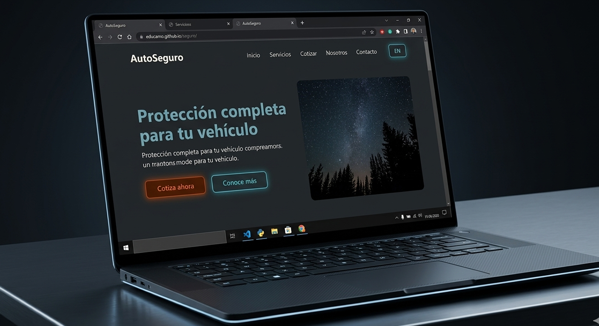

DESPLEGADO
Seguros & Protección Integral Plataforma Web
Diseño y desarrollo de una plataforma web corporativa para una firma de corretaje de seguros. El proyecto se centra en una arquitectura de información limpia, navegación intuitiva y una interfaz moderna diseñada para transmitir confianza, facilitando la conversión y la consulta de pólizas.
#AstroJs
#CSS
#JavaScript
VER DEMO arrow_forward